Imaginez des collègues numériques spécialisés — un chercheur, un rédacteur, un vérificateur — coordonnés par un chef d'équipe. Ensemble, ils traitent vos tâches répétitives (appels d'offres, veille, tri de candidatures) et vous rendent un travail vérifié au petit matin.
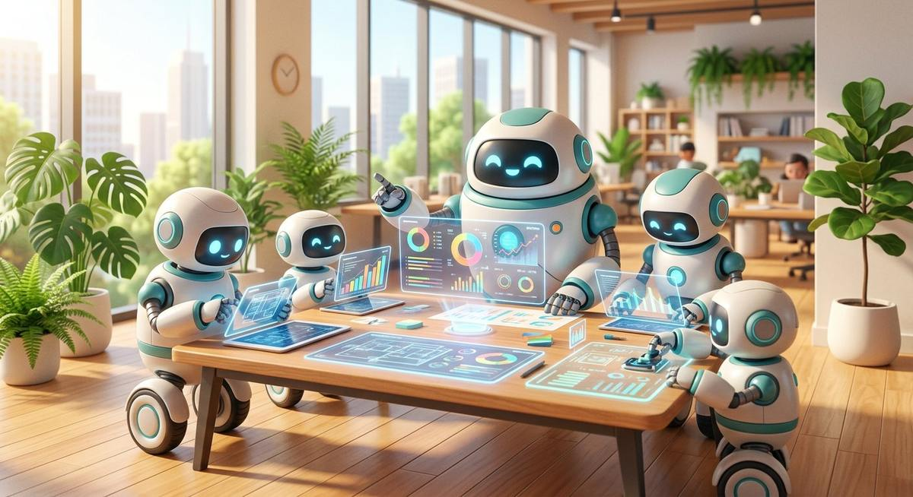
Le secret des systèmes agentiques qui marchent : un orchestrateur qui distribue le travail, et des agents limités mais excellents sur UN rôle — chercher, rédiger, vérifier, brancher. C’est la différence entre un stagiaire débordé et une vraie rédaction.
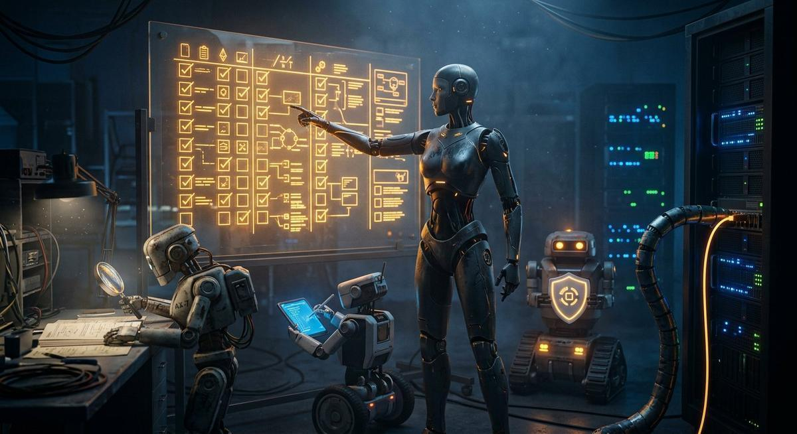
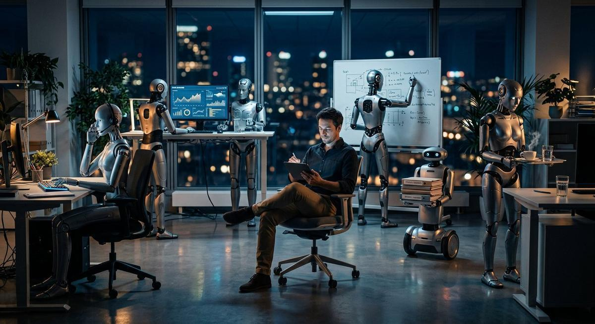
Pas un robot magique : une équipe structurée, avec un chef, des spécialistes et un contrôleur qualité.
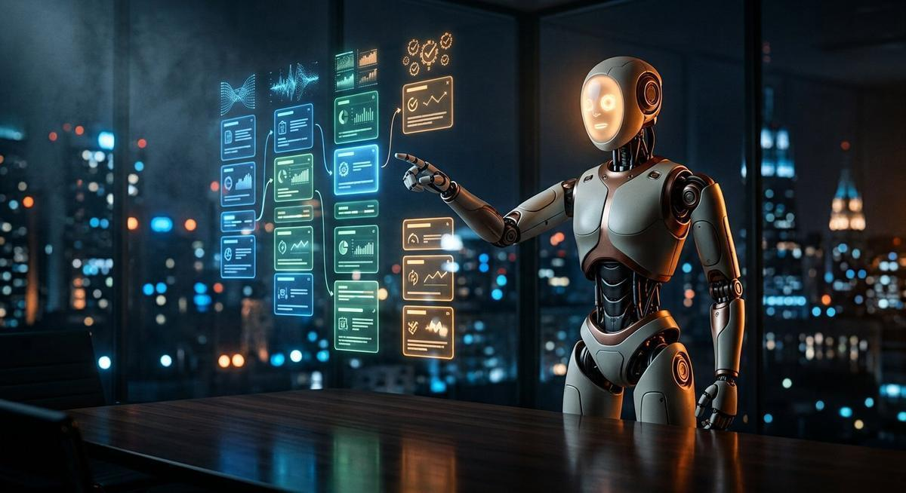
Découpe votre mission en étapes, distribue le travail, vérifie que tout est rendu à l'heure.
Trouve l'information dans vos documents, vos bases internes ou sur le web — sans vous espionner.
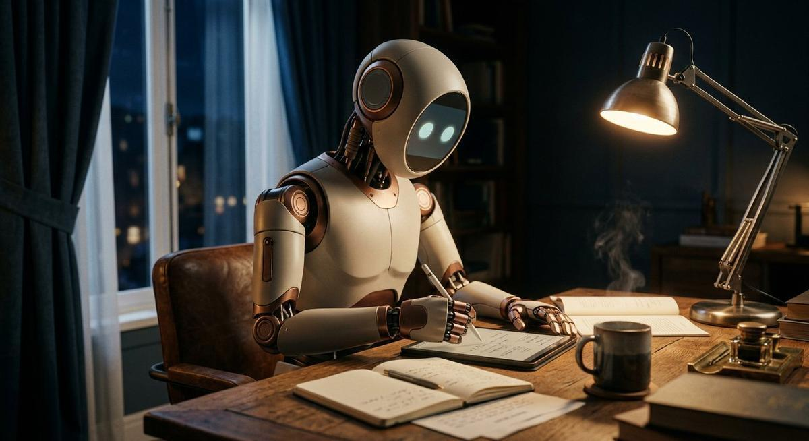
Produit le livrable : courrier, mémoire, rapport, synthèse — dans votre style et vos formats.
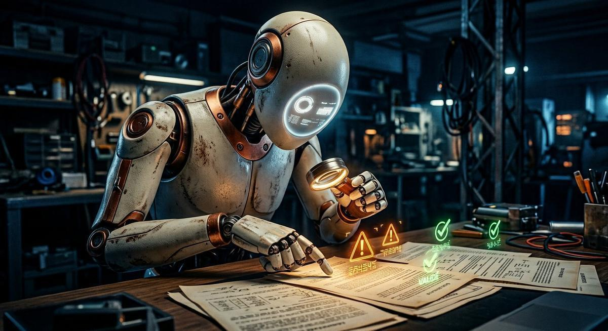
Contrôle chaque affirmation, signale les doutes. Rien ne vous est livré sans sa validation.
Mission confiée à l'équipe : « Préparez-moi un rapport sur le marché des robots de tonte. » Regardez bien : trois agents partent en parallèle, un critique renvoie le travail en boucle jusqu'à satisfaction, le chef d'orchestre arbitre puis fusionne. C'est exactement ainsi que fonctionnent CrewAI et LangGraph sur nos projets.
🧠 Ce que montre cette démo : ① le parallélisme (3 agents travaillent en même temps, pas l'un après l'autre), ② la boucle d'amélioration (le critique renvoie le brouillon jusqu'à ce qu'il soit bon), ③ l'arbitrage (le chef d'orchestre décide qui fait quoi et quand c'est terminé), ④ la fusion des contributions en un livrable unique. Aucun pipeline linéaire : c'est un vrai graphe, comme nos déploiements LangGraph/CrewAI.
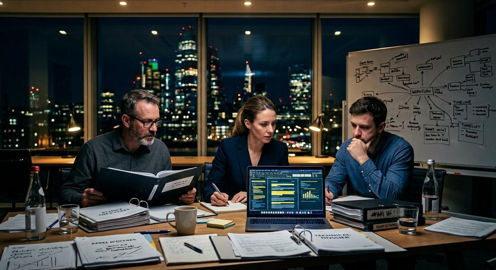
Analyse du cahier des charges, collecte des pièces, premier jet du mémoire technique, vérification de conformité. Des jours gagnés à chaque réponse.
Lecture des candidatures, synthèse par profil, shortlist argumentée — toujours revue par un humain (obligation légale AI Act pour le recrutement).
Chaque semaine, un brief clair : ce qui a changé chez vos concurrents, dans votre réglementation, votre secteur — sources citées.
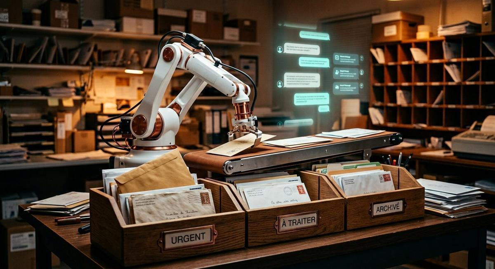
Classement, priorisation, projets de réponse pour les demandes récurrentes. Vous ne traitez que l'exception.
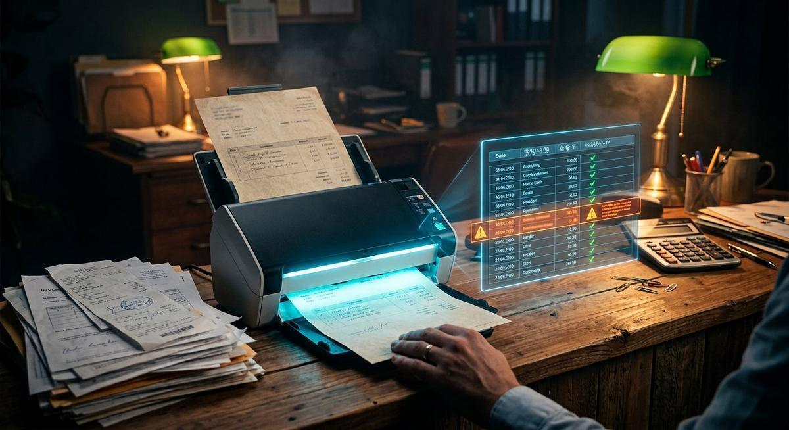
Factures, devis, contrats : extraction des données clés vers vos outils, contrôles de cohérence, alertes sur les anomalies.
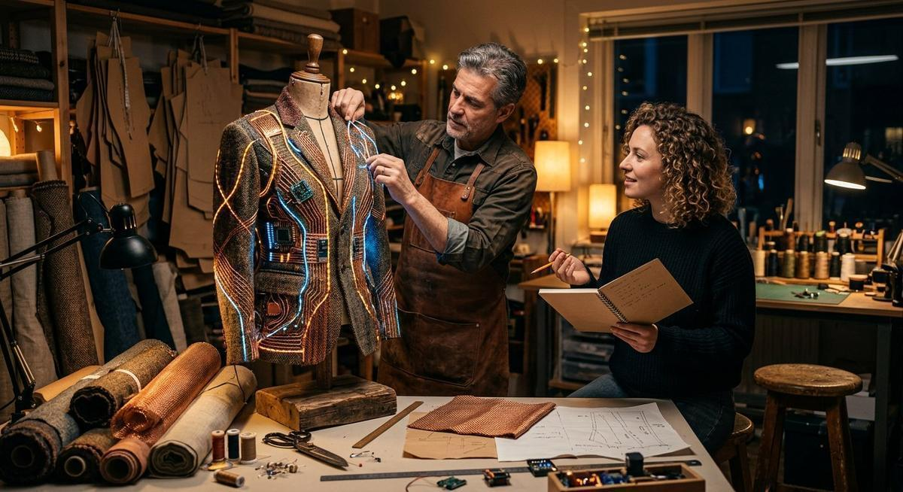
Votre processus répétitif n'est pas dans la liste ? C'est très probablement automatisable. Parlons-en — le premier échange est offert.
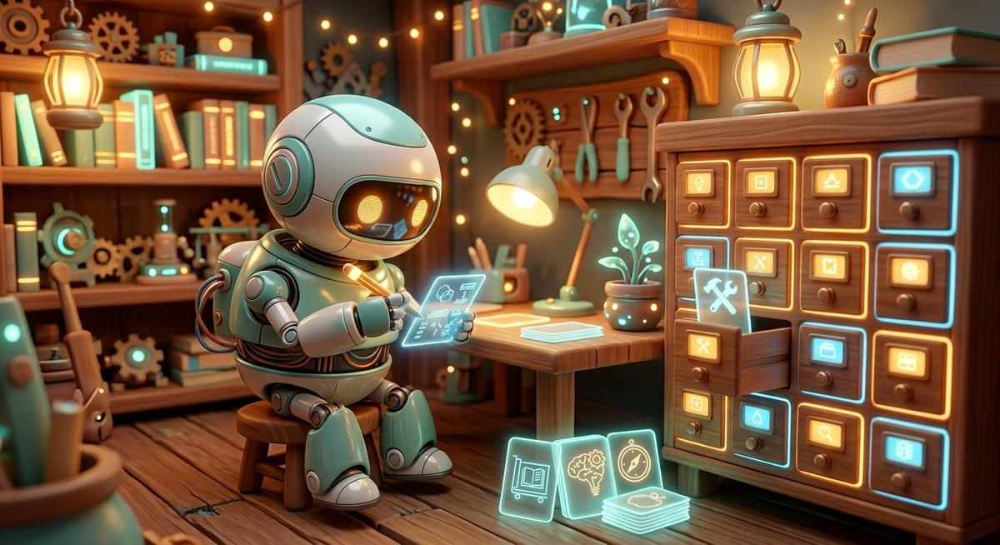
229 000 étoiles GitHub, une boucle d'apprentissage fermée, OpenClaw bloqué par Anthropic : notre enquête sur la nouvelle génération d'agents personnels — et comment les dresser sans danger.
Lire l'enquête →